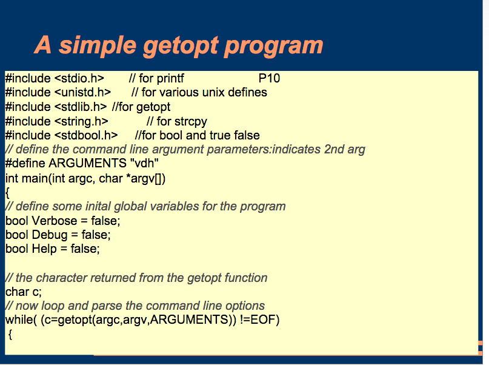
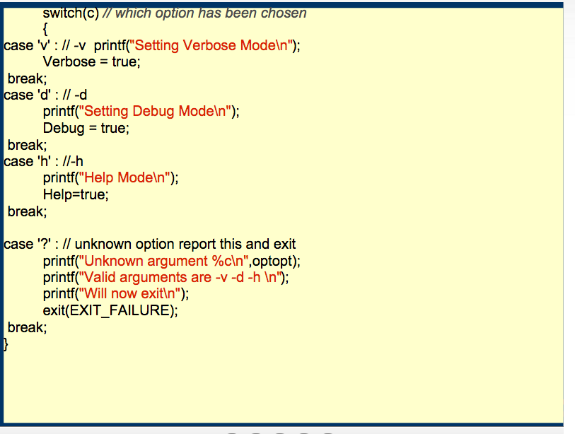

class: center, middle ### Extending Perl 6 ## Command Line Argument Parsing ## using Metaprogramming #### Brian Duggan <span class='github'> <small><span class='github'>bduggan</span> <br>bduggan@matatu.org </span> <a href="http://promptworks.com"><img src="promptworks-logo.png"></a> --- class: center, middle count: false background-image: url(gears-background.png) <h2>We craft software for companies that care about the details.</h2> <a href="http://promptworks.com"><img src="promptworks-logo.png"></a> --- ### Extending Command Line Argument Parsing using Metaprogramming * Part I: Command Line Argument Parsing * Part II: using Metaprogramming --- class: center, middle # Part I # Command Line Argument Parsing --- class: center, middle Command line argument parsing ## Is often harder than it should be --- class: center, middle  --- class: center, middle  --- class: center, middle ## It shouldn't be so hard --- ## Command Line Argument Parsing <pre class='cute'> gm convert -size 120x120 cockatoo.jpg -resize 120x120 +profile "*" thumbnail.jpg </pre> -- ## It's almost like calling a function. ```perl6 gm('convert', size => '120x120', input => 'cockatoo.jpg', resize => '120x120', profile => True, files => '*', output => 'thumbnail.jpg') ``` --- ## Command Line Argument Parsing <pre class='cute'> gm convert -size 120x120 cockatoo.jpg -resize 120x120 +profile "*" thumbnail.jpg </pre> ## But we need * positional or named parameters * required or optional parameters * typed parameters * parameters with short or long names * parameters with documentation * other...? --- class: center, middle ## Perl 6 subroutines support all these things. --- class: center, middle ## Perl 6 CLI arguments are mapped to parameters for MAIN() --- layout: true .footer[ basics ∙ positional/named ∙ required ∙ types ∙ defaults ∙ aliases ∙ constraints ∙ multi-dispatch ∙ docs ] --- ## Let's look at examples of: * Positional vs named parameters * Required parameters * Types * Defaults * Aliases * Constraints * Multiple dispatch * Documentation --- layout: true .footer[ **basics** ∙ positional/named ∙ required ∙ types ∙ defaults ∙ aliases ∙ constraints ∙ multi-dispatch ∙ docs ] --- ### But first: no argument parsing .right[greet] ```perl6 #!/usr/bin/env perl6 say "hello, world"; ``` ``` $ ./greet hello, world ``` You can always do your own thing using `@*ARGS` if you want. --- ### MAIN turns on argument parsing .right[greet] ```perl6 sub MAIN { say "hello, world"; } ``` ``` $ greet hello, world ``` -- ``` $ greet --help Usage: greet ``` -- ``` $ greet how does this work Usage: greet ``` --- layout: true .footer[ basics ∙ **positional/named** ∙ required ∙ types ∙ defaults ∙ aliases ∙ constraints ∙ multi-dispatch ∙ docs ] --- ### positional vs named parameters .right[positional] ```perl6 sub MAIN($name) { say "hello, $name"; } ``` .right[named] ```perl6 sub MAIN(:$name) { say "hello, $name"; } ``` ``` $ greet Aristotle hello, Aristotle ``` ``` $ greet --name=Aristotle hello, Aristotle ``` -- ```perl6 # like MAIN('Aristotle'); MAIN(name => 'Aristotle'); ``` --- layout: true .footer[ basics ∙ positional/named ∙ **required** ∙ types ∙ defaults ∙ aliases ∙ constraints ∙ multi-dispatch ∙ docs ] --- ### Required parameters ```perl6 sub MAIN(:$name is required) { say "hello, $name"; } ``` ```perl6 sub MAIN(:$name!) { say "hello, $name"; } ``` ``` $ greet Usage: greet --name=<Any> ``` --- layout: true .footer[ basics ∙ positional/named ∙ required ∙ **types** ∙ defaults ∙ aliases ∙ constraints ∙ multi-dispatch ∙ docs ] --- ### Types ```perl6 sub MAIN(Str :$name!, Bool :$howru) { say "hello, $name"; say "how are you?" if $howru } ``` ``` Usage: greet --name=<Str> [--howru] $ greet --name=Bob --howru hello, Bob how are you? ``` --- layout: true .footer[ basics ∙ positional/named ∙ required ∙ types ∙ **defaults** ∙ aliases ∙ constraints ∙ multi-dispatch ∙ docs ] --- ### Defaults ```perl6 sub MAIN($name = 'Bob') { say "hello, $name" } ``` ``` $ greet -h greet [<name>] ``` note: default value is not shown in the default usage ??? Note that the default is not in the usage. More on that later. --- layout: true .footer[ basics ∙ positional/named ∙ required ∙ types ∙ defaults ∙ **aliases** ∙ constraints ∙ multi-dispatch ∙ docs ] --- ### Aliases ```perl6 sub MAIN( Str :n( :name( $name ) ) ) { say "hi $name"; } ``` ``` Usage: greet [-n|--name=<Str>] ``` --- layout: true .footer[ basics ∙ positional/named ∙ required ∙ types ∙ defaults ∙ aliases ∙ **constraints** ∙ multi-dispatch ∙ docs ] --- ### Constraints ```perl6 sub MAIN( $name where /:i 'bob' | 'robert' / ) { say "Is that you, Bob?" } ``` ``` $ greet Roberto Is that you, Bob? $ greet joe Usage: greet <name> ``` ??? Again, notice that constraints are not there. --- layout: true .footer[ basics ∙ positional/named ∙ required ∙ types ∙ defaults ∙ aliases ∙ constraints ∙ **multi-dispatch** ∙ docs ] --- ### Multiple dispatch ```perl6 multi MAIN('bob') { say "Hello, Bob"; } multi MAIN('alice') { say "Hi, Alice"; } ``` ``` $ greet Usage: greet bob greet alice ``` ``` $ greet bob Hello, Bob ``` --- layout: true .footer[ basics ∙ positional/named ∙ required ∙ types ∙ defaults ∙ aliases ∙ constraints ∙ multi-dispatch ∙ **docs** ] --- ### Documentation ```perl6 #| Say hello to someone. multi MAIN('hello', Str :$name! #= the person to be greeted ) { say "hello, $name" } #| Say goodbye. multi MAIN('bye', Str :$name!) { say "Goodbye, $name, see you later." } ``` ``` Usage: greet --name=<Str> hello -- Say hello to someone. greet --name=<Str> bye -- Say goodbye. --name=<Str> the person to be greeted ``` <small> Note: named arguments must come first unless you set `my $*MAIN-ALLOW-NAMED-ANYWHERE = True`<br> <b>update</b> (2017-07-03): This is changing to `my %*SUB-MAIN-OPTS = :named-anywhere` </small> ??? #| attaches documentation to whatever comes next #= attaches docs to whatever came before the comment --- layout: true --- class: center, middle # Part II # Metaprogramming --- ### What more could we possibly want? --- ### What more could we possibly want? .small[ ``` usage: git [--version] [--help] [-C <path>] [-c name=value] [--exec-path[=<path>]] [--html-path] [--man-path] [--info-path] [-p|--paginate|--no-pager] [--no-replace-objects] [--bare] [--git-dir=<path>] [--work-tree=<path>] [--namespace=<name>] <command> [<args>] The most commonly used git commands are: add Add file contents to the index bisect Find by binary search the change that introduced a bug branch List, create, or delete branches checkout Checkout a branch or paths to the working tree clone Clone a repository into a new directory commit Record changes to the repository diff Show changes between commits, commit and working tree, etc fetch Download objects and refs from another repository grep Print lines matching a pattern init Create an empty Git repository or reinitialize an existing one log Show commit logs pull Fetch from and integrate with another repository or a local branch push Update remote refs along with associated objects rebase Forward-port local commits to the updated upstream head reset Reset current HEAD to the specified state rm Remove files from the working tree and from the index show Show various types of objects status Show the working tree status tag Create, list, delete or verify a tag object signed with GPG 'git help -a' and 'git help -g' lists available subcommands and some concept guides. See 'git help <command>' or 'git help <concept>' to read about a specific subcommand or concept. ``` ] --- layout: true .footer[ metamodel ∙ defaults ∙ constraints ∙ subcommands ∙ suboptions ∙ modularize ∙ testing ] --- ### What more could we possibly want? * Subcommands * Subcommand-options * Display the defaults * Display the constraints * Modularize the code * Add testing --- layout: true .footer[ ** metamodel ** ∙ defaults ∙ constraints ∙ subcommands ∙ suboptions ∙ modularize ∙ testing ] --- ### How? Use the metamodel! * Types * Sub * Signature * Parameter * Constraint * Type .right[ ] * Introspection methods * WHY -- docs * WHAT -- type of something * WHO -- symbol table * HOW -- metaclass<br> ("Higher Order Workings") --- layout: true .footer[ metamodel ∙ ** defaults ** ∙ constraints ∙ subcommands ∙ suboptions ∙ modularize ∙ testing ] --- ### USAGE with defaults ```perl6 sub MAIN($name = 'bob') { } sub USAGE { for &MAIN.signature.params -> $param { my $default = $param.default; say $param.name; say $default(); } } ``` ``` $name bob ``` --- ### USAGE with defaults ```perl6 sub MAIN($name = 'bob') { } sub USAGE { for &MAIN.signature.params -> $param { my $default = $param.default; say $param.name; say $default(); } } ``` * `&Main` is an object of type `Sub`. .right[.black[Sub]] * The `Sub` class has a method `signature`. * `signature` returns an object of type `Signature`. .right[.black[Signature]] * `Signature` has a method `params`. * `params` returns a list of objects of type `Parameter`. .right[.black[Parameter]] * `Parameter` has a method `default`. * `default` returns a `Block`. .right[.black[Block]] * A `Block` can be called. .right[ .black[ http://docs.perl6.org/type/Sub ] ] --- layout: true .footer[ metamodel ∙ defaults ∙ ** constraints ** ∙ subcommands ∙ suboptions ∙ modularize ∙ testing ] --- ### USAGE with constraints ```perl6 sub MAIN($name where /:i 'bob' | 'robert' /) { } sub USAGE { for &MAIN.signature.params -> $p { for $p.constraints -> $c { say $c.^name; say $c; } } } ``` ``` Regex /:i 'bob' | 'robert' / ``` --- count: false ### USAGE with constraints ```perl6 sub MAIN($name where /:i 'bob' | 'robert' /) { } sub USAGE { for &MAIN.signature.params -> $p { for $p.constraints -> $c { say $c.^name; say $c; } } } ``` `$c.^name` is short for `$c.HOW($c).name`<br> `.HOW` returns a metaclass<br> alternatively<br> `.WHAT` returns a type object (i.e. a class)<br> `$c.WHAT.^name` is also `Regex`<br> `say $c` calls `$c.gist` --- ### USAGE with type ```perl6 sub MAIN(Str $name) { } sub USAGE { for &MAIN.signature.params -> $p { say $p.name; say $p.type.^name; } } ``` ``` $name Str ``` `$p` has type `Parameter`<br> `type` gives a type object for the type constraint --- ### USAGE with constant ```perl6 sub MAIN('bob') { } sub USAGE { say &MAIN.signature.params[0].constraints[0].^name; say &MAIN.signature.params[0].constraints[0].perl; } ``` ``` Junction all("bob") ``` --- ### USAGE with constant ```perl6 sub MAIN('bob') { } sub USAGE { if &MAIN.signature.params[0].constraints[0].perl ~~ / 'all("' (.*) '")' / { say ~$/[0]; } } ``` ``` bob ``` --- layout: true .footer[ metamodel ∙ defaults ∙ constraints ∙ ** subcommands ** ∙ suboptions ∙ modularize ∙ testing ] --- ### USAGE for subcommands ```perl6 multi MAIN('bob') { } multi MAIN('alice') { } sub subcommand($f) { $f.signature.params[0].constraints[0].perl ~~ / 'all("' (.*) '")' / and return ~$/[0]; } sub USAGE { for &MAIN.candidates -> $m { say subcommand($m); } } ``` ``` bob alice ``` --- layout: true .footer[ metamodel ∙ defaults ∙ constraints ∙ subcommands ∙ ** suboptions ** ∙ modularize ∙ testing ] --- ### USAGE for subcommands ```perl6 multi MAIN('bob', :$opt #= option for bob ) { ... } multi MAIN('alice', :$opt #= option for alice ) { ... } sub USAGE { for &MAIN.candidates -> $m { say subcommand($m); for $m.signature.params[1..*] -> $p { say $p.name ~ ' : ' ~ $p.WHY; } } } ``` ``` bob $opt : option for bob alice $opt : option for alice ``` --- layout: true .footer[ metamodel ∙ defaults ∙ constraints ∙ subcommands ∙ suboptions ∙ ** modularize ** ∙ testing ] --- ### Modularizing the code ``` $ tree . ├── alice.pm ├── bob.pm └── greet ``` --- ### Modularizing the code .right[alice.pm] ```perl6 multi MAIN('alice', ) is export { ... } ``` .right[bob.pm] ```perl6 multi MAIN('bob', ) is export { ... } ``` .right[greet] ```perl6 use alice; use bob; ``` --- ### Modularizing the code .right[alice.pm] ```perl6 multi cmd('alice', ) is export { ... } ``` .right[bob.pm] ```perl6 multi cmd('bob', ) is export { ... } ``` .right[greet] ```perl6 use alice; use bob; sub MAIN(*@args, *%args) { cmd(|@args, |%args) } ``` --- layout: true .footer[ metamodel ∙ defaults ∙ constraints ∙ subcommands ∙ suboptions ∙ modularize ∙ ** testing ** ] --- ### Testing ```perl6 use lib '.'; use Test; for <alice bob> -> $cmd { use-ok $cmd; require ::("$cmd") <&cmd>; # ... more tests using cmd } done-testing; ``` ``` ok 1 - alice module can be use-d ok ok 2 - bob module can be use-d ok 1..2 ``` --- layout: true --- ### Summary * Lots of built-in support for argument parsing. * Args mapped to calling `&MAIN` using a rich metamodel. * You can introspect subroutines yourself for better documentation. * The built-in features can be a starting point for a bigger application. ### The End